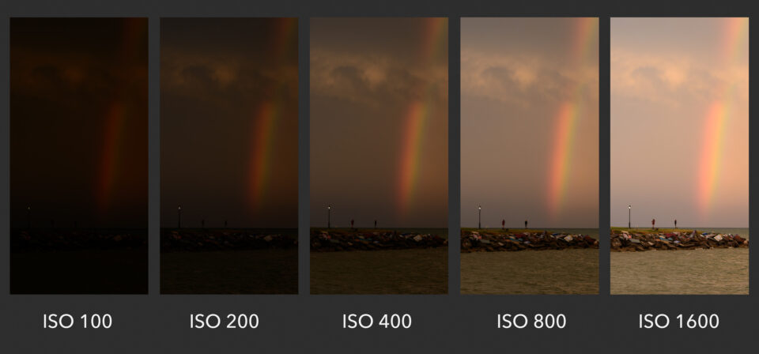

In very basic terms, ISO is simply a camera setting that will brighten or darken a photo. As you increase your ISO number, your photos will grow progressively brighter. For that reason, ISO can help you capture images in darker environments, or be more flexible about your aperture and shutter speed settings. However, raising your ISO has consequences. A photo taken at too high of an ISO will show a lot of grain, also known as noise, and might not be usable. So, brightening a photo via ISO is always a trade-off. You should only raise your ISO when you are unable to brighten the photo via shutter speed or aperture instead (for example, if using a longer shutter speed would cause your subject to be blurry).  Common ISO Values Every camera has a different range of ISO values (sometimes called ISO speeds) that you can use. A common set is as follows: ISO 100 (low ISO) ISO 200 ISO 400 ISO 800 ISO 1600 ISO 3200 ISO 6400 (high ISO) Quite simply, when you double your ISO speed, you are doubling the brightness of the photo. So, a photo at ISO 400 will be twice brighter than ISO 200, which will be twice brighter than ISO 100.